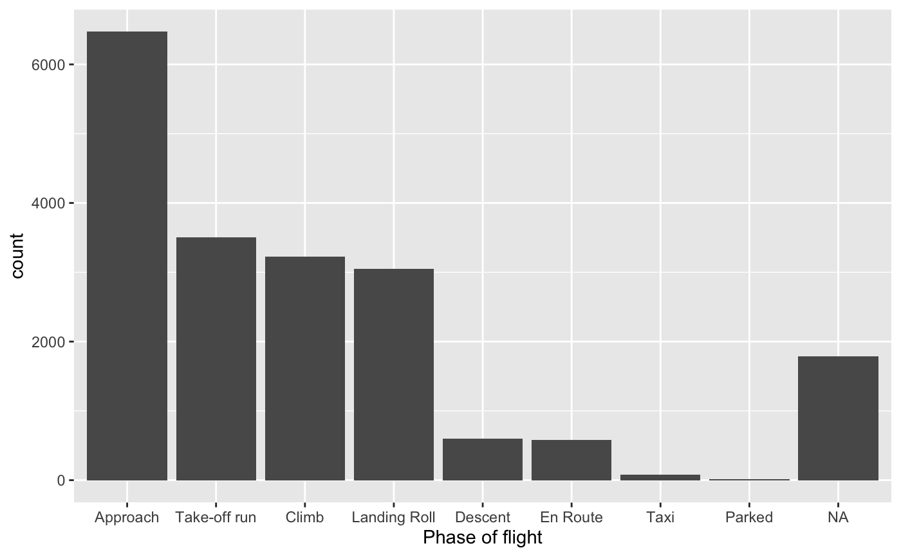
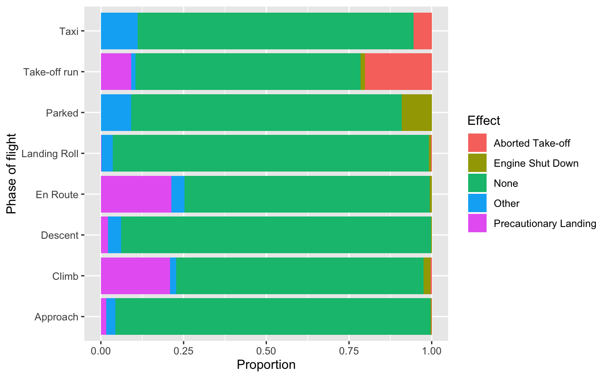

A collection of all collisions between aircraft in wildlife that were reported to the US Federal Aviation Administration between 1990 and 1997, with details on the circumstances of the collision.
birds
A data frame with 19302 observations on the following 17 variables.
Three letter identification code for the operator (carrier) of the aircraft.
Name of the aircraft operator.
Make and model of aircraft.
Verbal remarks regarding the collision.
Phase of the flight during which the collision occurred: Approach, Climb, Descent, En Route, Landing Roll, Parked, Take-off run, Taxi.
Mass of the aircraft classified as 2250 kg or less (1), 2251-5700 kg (2), 5701-27000 kg (3), 27001-272000 kg (4), above 272000 kg (5).
Number of engines on the aircraft.
Date of the collision (MM/DD/YYYY).
Light conditions: Dawn, Day, Dusk, Night.
Two letter abbreviation of the US state in which the collision occurred.
Feet above ground level.
Knots (indicated air speed).
Effect on flight: Aborted Take-off, Engine Shut Down, None, Other, Precautionary Landing.
Type of cloud cover, if any: No Cloud, Overcast, Some Cloud.
Common name for bird or other wildlife.
Number of birds/wildlife seen by pilot: 1, 2-10, 11-100, Over 100.
Number of birds/wildlife struck: 0, 1, 2-10, 11-100, Over 100.
https://dev.socrata.com/foundry/datahub.transportation.gov/jhay-dgxy. Original data from datahub.transportation.gov. Retrieval date: Feb 4, 2012.
The FAA National Wildlife Strike Database contains strike reports that are voluntarily reported to the FAA by pilots, airlines, airports and others. Current research indicates that only about 20% of strikes are reported. Wildlife strike reporting is not uniform as some organizations have more robust voluntary reporting procedures. Because of variations in reporting, users are cautioned that the comparisons between individual airports or airlines may be misleading.
library(dplyr) library(ggplot2) library(forcats) library(tidyr) # Phase of the flight during which the collision occurred, tabular birds %>% count(phase_of_flt, sort = TRUE)#> # A tibble: 9 x 2 #> phase_of_flt n #> <fct> <int> #> 1 Approach 6470 #> 2 Take-off run 3506 #> 3 Climb 3222 #> 4 Landing Roll 3047 #> 5 <NA> 1783 #> 6 Descent 599 #> 7 En Route 585 #> 8 Taxi 79 #> 9 Parked 11# Phase of the flight during which the collision occurred, barplot ggplot(birds, aes(y = fct_infreq(phase_of_flt))) + geom_bar() + labs(x = "Phase of flight")#> Min. 1st Qu. Median Mean 3rd Qu. Max. NA's #> 0.0 0.0 40.0 754.7 500.0 32500.0 3193# Phase of flight vs. effect of crash birds %>% drop_na(phase_of_flt, effect) %>% ggplot(aes(y = phase_of_flt, fill = effect)) + geom_bar(position = "fill") + labs(x = "Proportion", y = "Phase of flight", fill = "Effect")